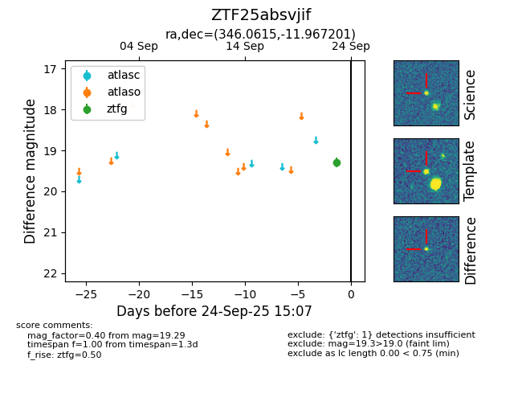

FINK: ZTF25absvjif
Lasair: ZTF25absvjif
ALeRCE: ZTF25absvjif
ZTF25absvjif (ztf,fink)
equatorial (ra, dec) = (346.0615,-11.96720)
galactic (l, b) = (58.7756,-60.65545)

last ztfg=19.29
1 ztfg detections